| 消去されたシャガールの妻（動画付き）: 「愛の画家」をめぐる「妻」と妻 アーティストラブ | |
| 角間貴生 | |
| (2018) | |
消去されたシャガールの妻
（「愛の画家」をめぐる「妻」と妻）
ーアーティストラブ４ー
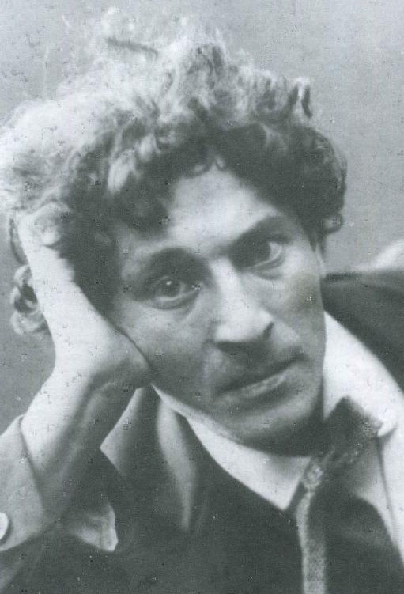
まえがき
シャガールの最後の妻ヴァランティーナは、夫の「愛の画家」イメージ作りに奔走しました...
『空飛ぶ恋人...ベラとシャガール』こそは、その「愛の画家シャガール」のイメージにぴったりでした。
しかしそのイメージ戦略にひとり邪魔な女性の存在があったのです。
それはシャガールと７年間を共にし、息子ダヴィッドを生んだヴァージニアという女性です。
こうしてシャガールの履歴から、一時期「七年間の妻」が消去されることになりました。
この物語は「愛の画家」をめぐって、暴露する元愛人と新たな妻が壮絶なバトルを繰り広げる物語です。
１彼の孤独を癒したのは私です
（ヴァージニアの言葉１）
私はイギリス人のヴァージニア・ハガードです。
スコットランド人の画家ジョン・マクニールと結婚していましたが、１９５２年に正式に離婚が成立し、もとのハガード姓に戻りました。
さて私とマルク・シャガールのお話をしようと思います。
１９４４年９月２日の事でした。
数日前からウイルス性の伝染病にかかっていた、シャガールの最愛の妻ベラ・ローゼンフェルトは、ニューヨーク州北部の田舎病院で帰らぬ人となりました。
戦時中の物資制限でペニシリンが病院になかったからです。
ベラは１４歳の時に故郷のロシア・ヴィテブスクで、マルク・シャガールと出会い、そして愛し合い２０歳で結婚...３０年近く彼と生活を共にした...マルクにとっての最愛の妻です。
マルクが絵の中で絶えず「空飛ぶ恋人」として描きつづけた女性でした。
そのベラが旅先で、突如、亡くなったのです。
第二次大戦を避けてアメリカに亡命中の二人でした。
パリの開放が告げられ、ようやく二人でフランスに戻れるのを楽しみにしていた矢先のことだったのですが...突然の不幸がマルクを襲ったのです。
伴侶を失った彼の悲しみは深かったようです。
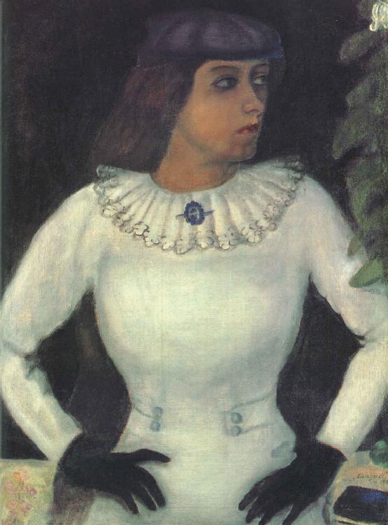
「雷は鳴り、雲は開かれた。...ベラはこの世から旅立った。すべてが真っ暗になった。」
マルクは、その後、娘イダのいるニューヨークに９か月近くも居座ったまま、思うように絵も描けなくなってしまいました。
彼は救いようのない鬱々とした孤独感にさいなまれ続けたのです。
困り果てた娘イダから、マルクの身の回りのお世話をと、お願いされたのがこの私でした。
それまで、私は画家の夫ジョン・マクニールと娘ジーンの三人で暮らしていましたが、ジョンは絵の創作にすっかり自信を失くし、心も荒れすさび、私にも暴力をふるうようなありさまでした。
彼との不安定な生活に疲れ果て、私は家を出て仕事を探しているところだったのです。
私はもちろんこの仕事を快く引き受けて、毎日、マルクのアトリエに通うことになりました。
マルクのアトリエの窓からはハドソン湾とニュージャージーの緑の丘陵が見渡せました。
私の仕事は家政婦...私はこの部屋でマルクの身の周りの世話を始めたのです。
最初のころはたしかに、マルクの身の回りの世話だけでした。
しかし、やがて少しずつ、私は彼の話し相手も務めることになりました。
それは彼の方から望んだことでした。
彼は毎日、私にベラとの思い出を語ることで少しずつ心が癒されていくようなのでした。
やがて、ベラを亡くして暗く淋しいマルクの心が、夫と別れて同じように淋しい私の心とうまくかみ合ったのでしょうか...。
３０歳近い歳の差がありましたが、彼は次第に自分の孤独な心のうちまで、私に話すようになっていったのです。
ある日、マルクは私を彼の膝の上に座らせました。
二つの腕で私をしっかり抱き寄せてから、何度も何度も熱いキッスをしました。
そして私を激しく求めて来たのです。
内向的な二人の間に...いつしか愛情が芽生えていたのでした。
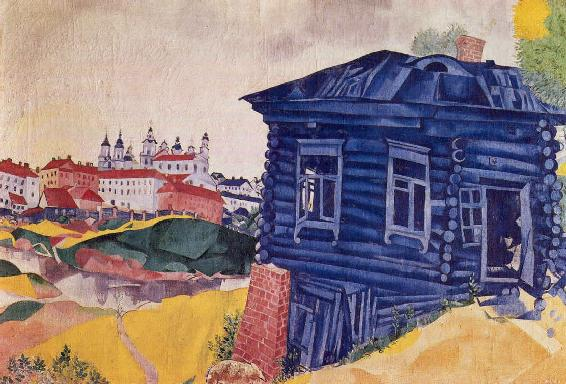
２彼は大芸術家になったけれど
（ヴァージニアの言葉２）
マルクは元気を取り戻し、新たな創作にも意欲的に取り組めるようになりました。
お互いにニューヨークの雑踏が好きでなかったので、ハイフォールズという片田舎に移り、二人で自然の中の静かな生活を楽しみました。
マルクは寝る前でも制作の傍らでも、私から本を読んでもらうのが大好きでした。
本の中の話を聞きながら、マルクは色んな幻想をはばたかせ、絵のイメージをどんどん広げることが出来たからです。
やがて、マルクの絵の中に私らしい女性も描かれるようになっていきました。
『壁時計のある自画像』ではウルトラマリーンとアジュール色で私の顔が描かれました。
悲しげな眼を持つ赤色の山羊として描かれているのが画家マルク・シャガールでした。
私が山羊の画家に優しく寄りかかっている...そんな絵でした。
二人の前にいるキリスト像は彼自身でもあるのでしょうか。
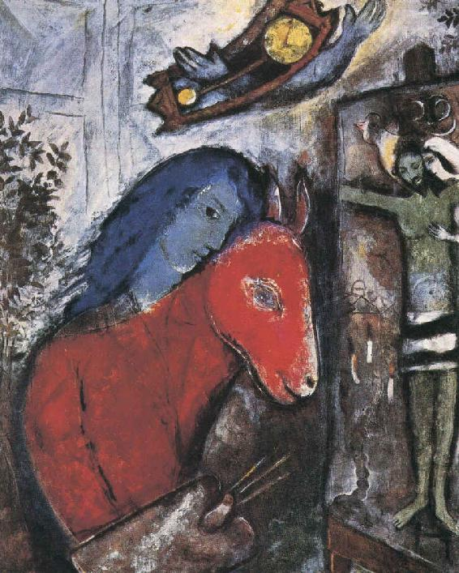
私は妊娠し男の子を産みました。
マルクは幼くして亡くなった自分の弟の名前をとって、ダヴィッドと名付け、とても喜んでくれました。
マルクは私に夫ジョンとの離婚を勧めました。
しかしその当時、夫ジョンの暴力が娘のジーンに及ぶのが怖くて、私はなかなか離婚に踏み切れないでいたのです。
私がマルクとの結婚を延ばし続けていても、彼は私を愛してくれました。
しかし当初は、マルクが娘のジーンを受け入れてくれなかったので、私が彼の愛をひとり占めすることはジーンを犠牲にすることでもありました。
しばらくジーンを施設に預けたままで私は悩み続けたのでした。
..............................
マルクとベラの娘イダは美術界のエリートたちを招待して、昼食会や晩さん会を開くことが大好きでした。
パーティは頻繁に催され、多くの画家や画商や文化人たちが交流し合うのでした。
その都度、パーティの苦手な私は、自分が少しずつマルクから引き離されていく...そんな妄想に襲われたものです。
じっさい、マルクとイダの間には父娘ならではの深い愛情もあったのでしょう。
マルクはイダと一緒の時は、いつも私を裏切るのでした。
やがて、マルクは日々ひたすら描きつづけ、芸術家の階段を上り続けました。
１９４８年の８月に、マルク家の人々と私は念願のフランスに戻ることになりました。
そして、アメリカからフランスに戻ると、マルクは圧しも圧されぬ大画家だったのです。
彼は常に画商たちや批評家たちや画家仲間など多くの取り巻きに囲まれるようになっていました。
私たちは豪勢な邸宅に住みました。
かつての内省的な生活も、素朴で簡潔な生活も、自然に囲まれた静かな生活も、いつしか過去のものとなっていたのです。
時には、画商の要請で、マルクは人々を喜ばせるだけの、ありきたりの絵を描くこともありました。
しかし、それらの絵も高額な額に入れられ、途方もない価格で売られていったのです。
やがてマルクの作品の市場価格がどんどん上がって行きました。
そしてそれと同時に彼はどんどん自信家へと変貌していきました。
やがて、彼は称賛の言葉にしか耳を貸さなくなっていました。
彼が敵愾心を燃やす相手はもうピカソとマティスだけでした。
彼はピカソとマティスには激しく嫉妬したのです。
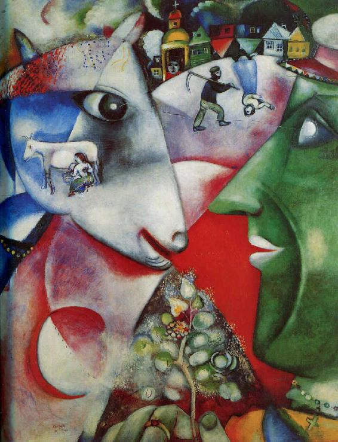
３いつしかストレスだらけになっていた
（ヴァージニアの言葉３）
イダは展覧会や催事を積極的に行い、「シャガール」を世界中に売り込む才能に長けていました。
彼女の力でイスラエルでの展覧会が始まりました。
マルクはイスラエル国家から公式に招待されたのです。
彼の絵はイスラエルで大絶賛されました。
イスラエル国家がユダヤの英雄・シャガールを取り込もうとしているようにも見えました。
しかし、民衆の一部はマルクの表現にいら立ったのです。
彼らの思い描くユダヤ教の世界ではなかったからでしょう。
本来、マルクの描きたい世界は、槌音響く新生国家イスラエルでもなかったし、ユダヤ教の教義の世界でもありませんでした。
マルクがこだわり続けたのは、彼が過ごしたヴイテブスクでのユダヤ人の暮らしや、子供のころ育った伝統的なロシアへの郷愁だったのです。
決してユダヤ教の教義の世界ではなかったはずです。
しかし、このイスラエル展の成功の後は、マルクも少し変わりました。
ユダヤ教を少しずつ心の糧にするようになったのでした。
自分を改めてユダヤ人と意識するようになったのです。
やがて、私の方がマルクとの宗教観の違いを気にするようになっていきました。
ある日の事でした。
マルクは私にユダヤ教への改宗を求めました。
勿論、私は生まれた時からキリスト教徒です。
私ははっきり「ユダヤ教への改宗はできません」と断りました。
彼は何も応えませんでした。
..............................
やがて、イダがマルクを世界的な表舞台にプロデュースすればするほど、マルクは私の内的世界から離れて行きました。
そしてマルクがユダヤやロシアを絵の主題にすればするほど、マルクは私から遠ざかっていきました。
私はユダヤ人でもなかったし、ロシア人でもなかったからです。
いつしか、私の心はストレスだらけになっていました。
日々のストレスから逃れたい私は、自然療法を実践する若者たちのグループに出かけるようになりました。
私が何回かその自然療法のグループに通っていると、マルクはそれに気がついたのです。
ある日、マルクは私にきつく言い渡しました。
「あんな所にはもう二度と行かないようにしなさい」
「どうしてですか？」と私が訊くと
「怪しいグループだからです」と一言でした。
実のところはマルクは非常に嫉妬深くなっていたのです。
本当の理由はそのグループには若い男たちがいっぱいいたからでした。
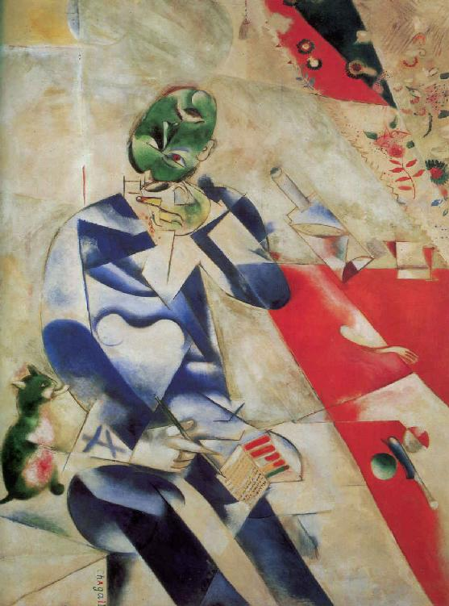
４久しぶりの恋だった
（ヴァージニアの言葉４）
ところで、イダが長年付き合ってきた恋人フランツ・マイヤーと晴れて結婚することになりました。
二人の結婚式の日、シャルル・レーランという写真家がやって来ました。
彼はマルクが厚い信頼を置くカメラマンでした。
結婚式やパーティの撮影一切が彼に任されていました。
そして、シャルルは私たち家族のガーデンパーティにも呼ばれたのです。
彼はマルクよりさらに一歳年上で、彼の額はすでにテカテカと光って、頭はつるっぱげでした。
彼はみんなの前でこのように自己紹介しました。
「ぼくはご覧のとおり少し大きい身体ですが、心の方も大きいのですよ。ただ、大きすぎて心臓の方が少し痛んでいます。心の痛むことが多い人生なものですから...」
テーブルのみんなが微笑みました。
マルクもこう言って応えました。
「本当だ...。ヴァージニアにその肉のいくらかでも分けてあげたいものだねぇ」
ほんの冗談のつもりのようでしたが、そのしゃべり方にはマルクの私への愛情が感じられませんでした。
少なくとも私にはそう思えました。
私とシャルル以外の人たちはみんな笑いましたが、私の心はちょっと複雑でした。
しかし、シャルルはパーティの間じゅう、色んな話をしてみんなを笑わせ、場を盛り上げました。
マルクのパーティでこんなに楽しいパーティも初めてでした。
当時、滅入ることの多くなっていた私には久しぶりに和やかな時間となりました。
ただ、私はシャルルのおしゃべりの合間に一瞬見え隠れする、彼の淋しげな心を見逃しませんでした。
私は彼の心の奥深さの方に興味を持ったのです。
そして、シャルルと初めて出会ったばかりというのに、この日、私は久しぶりに心をときめかせている自分を見つけたのです。
彼の方もまた同じように、私の内面に興味を抱いたようでした。
この日から私たちはマルクに知られぬように、お互いに手紙をやり取りすることになりました。
私は手紙の中ですでにマルクから離れつつあった自分の淋しい気持ちを訴えました。
シャルルも自分の孤独な心のうちを書いてきました。
手紙の数がどんどん増えていきました。
そして、手紙をやり取りすればするほど、私たちの愛情は燃え上がっていったのです。
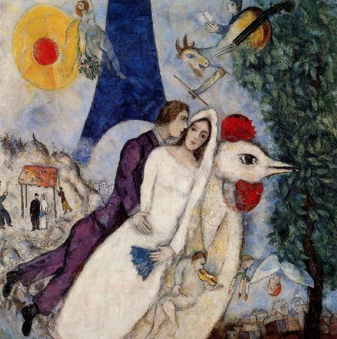
５私は決意したのです
（ヴァージニアの言葉５）
マルクが展覧会でパリに行っている１２月の事でした。
私はどうしてもシャルルに会いたくなって彼の家を訪ねることにしました。
近い距離でしたが久しぶりに乗る列車の旅でした。
列車が街なかを出ると大きな建物もなくなり、やがて車窓は初冬の畑と草原だけが広がっていました。
窓ガラスを覗くと、夕暮れの灰色の風景の中に、微かに私の顔が映っているのが見えました。
それは久しぶりに晴れやかな顔をした私でした。
私の心はときめいていたのでした。
駅に到着して彼の家までは歩いて15分ぐらいの距離、小雪が舞うなか、私はシャルルから送られた地図を頼りに歩きました。
彼の家はもう辺りの家々がまばらになり出すような、そんな田舎の静かな山間にありました。
小さなログハウス風の平屋建ての家でした。
周囲は木々に覆われ、横には小さな小川が流れ、玄関には石とガラスで出来た大きな現代彫刻が立っていました。
部屋の中は床板がきれいに磨かれ、あちこちに作られた壁の棚には様々なカメラや三脚などの撮影器具が並べられ、彼の几帳面な性格がうかがわれました。
シャルルはなぜこんなに淋しいところで独り暮らしをしているのだろうか、とふと思いましたが、それは私の過去についても言えることでした。
私たちはもう大人でした。
お互いの過去を訊き合うようなこともありません。
私たちは堰をきったように、今のお互いの孤独な心のうちを語り合ったのです。
私には彼の暗く深い繊細な心情がとてもよく共感できました。
それは私が、かつての夫ジョンや、かつてのマルク・シャガールに抱いたのと同じ感情だったのかもしれません。
二人で協力しながら夕食の料理をつくり、テーブルに皿とフォークとナイフを並べた時には二人はもう夫婦の気分でした。
私は彼と一緒に居るとなぜこんなに安らぐのだろうと自らの心に問いかけました。
すると、こんな思いがどっと私の中に押し寄せて来たのです。
ふだんの私の生活って...マルクのそばで、私はなんと毎日が窒息しそうな日々なのだろうか...と。
私にはもう決意が出来上がっていたようです。
窓の外には小川のせせらぎが聞こえていました。
薪ストーブの中で真っ赤に燃える木ぎれがパチパチと音を立てていました。
静寂を破るようにシャルルはゆっくりと、しゃべり出しました。
「ぼくはマルク・シャガールのような名声もないしお金もない。おまけにぶくぶく太って心臓の病気まで抱えている身の上だ。」
「本当にこんなぼくでも良いのだったら、ぜひ、ぼくの所に来てほしい。ぼくは弱くて心優しいものをいたわってあげる気持ちだけはだれにも負けない。そんな自信だけはあるつもりなのだよ。」
...私はその夜、シャルルに身をあずけたのでした。
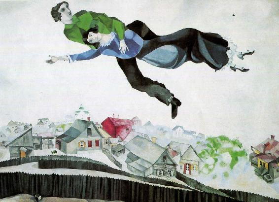
６私はすべて消去された
（ヴァージニアの言葉６）
ところが、マルクがパリから戻った日の事でした。
彼は私のテーブル上に置いてあった、シャルル宛の私の愛の手紙を発見したのです。
その手紙は一冊の本に挟んであって、外からは全く見えないはずだったのですが、目ざといマルクは気がついたのでした。
......彼は鉄のような拳で私を殴りつけて床に倒し、何度も何度も背中を殴りつけた。
そして私が立ち上がりかけると、再び殴り倒して叫んだ。
「どうして僕にこんな仕打ちができるんだ？最悪の裏切りだ。あの男は人間じゃない！あいつは何にもなかったように、厚かましくもイダの家にやって来た。嘘つきの偽善者め！お前も同じだ！」......
（「シャガールとの日々」黒田亮子訳 西村書店）
実はその頃、私の長年の念願だったジョンとの離婚も実現し、晴れてマルク・シャガールとの結婚だって可能でした。
そのはずなのに、私はマルクじゃなくて、シャルルの方を選んだのです。
私は息子のダヴィッドと一緒にマルクの家を出ました。
ダヴィッドにプレゼントされたマルクの絵１７点もすべて彼の部屋に置いたままで...。
マルクと私のこうした関係は、私自身が書いた本でおおやけになる１９８６年まで、世間的にはおおむね封印されました。
それは私がマルクのもとを去った後に、彼の妻となったヴァランティーナ...ヴァヴァが、私やダヴィッドをマルクの履歴から慎重に、そして完全に取り去ったからです。
ヴァヴァはなかなかのビジネスウーマンでした。
彼女は自分の夫シャガールを一つのイメージ戦略『愛の神話』で世界中に売り込もうと考えたようです。
それは恋人ベラとシャガールが空を飛ぶ『愛の神話』のイメージでした。
そのイメージ戦略は見事に成功して、『愛の画家シャガール』のイメージは世界中至る所にばらまかれ、そして浸透していったのです。
しかし、そこには『私とマルクの愛の日々』は入っていませんでした。
いや、意図的に完全に消去されていたのです。
『愛の画家シャガール』には『私とマルクの愛の日々』は邪魔だったのです。
..............................
やがて、イダの方も父親のマネージャーの地位を外され、ヴァヴァがマルク・シャガールの現実生活のすべてを管理することになりました。
私には、ヴァヴァと一緒になってからのマルクがますますビジネスマン化していったように思えます。
彼女の管理する「華麗な牢獄」の中で、彼は毎日、「富」を生産し続ける絵描きでした。
ただひたすら『愛の神話』を描き続ける絵描きでした。
マルクは名声と成功に酔いしれた人間に成り下がったのです。
.....................................................................
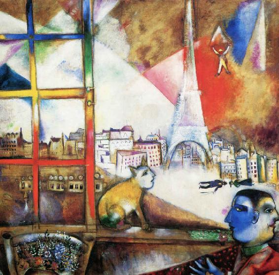
７私たちは自分の夢を捨てたのよ
（ヴァランティーナの言葉１）
私はロシア人のヴァランティーナ・ブロドスキーです。
あなたはシャガールと正式には結婚していませんから、私はシャガールの2番目の妻です。
通常、誰からもヴァヴァと呼ばれていますわ。
ところで、私の方からもマルク・シャガールとあなたヴァージニアの話を言わせてもらいたいと思います。
真実の事を言えば、あなたとシャルルの突然の駆け落ちは、繊細なマルクを地獄の底まで追い込み、突き落としたのです。
彼はあなたに逃げられた後、自尊心をズタズタに引き裂かれて立ち直れない状態でした。
全く絵も描けない状態になっていました。
そんな彼を、その地獄の底から必死になって救い出したのがこの私でした。
その間、マルクがどんな状態で、私がどんなに彼のために尽くしたかは、きっとあなたには分からないでしょうね。
その後、あなたは私たちに何の連絡もなしに、突然、暴露本まで出版して私たちを攻撃しましたね。
あの本はそれなりにヒットしたと聞きましたから、あなたにもそれなりの印税が入ったのかしら。
あなたはその本の中で何度も「私が意図的にマルクの履歴から『あなたとの七年間』を外した」と非難していますね。
しかし、それは当たりません。
なぜなら、マルク自身がそのことを痛切に望んだからです。
マルクは「あの悪夢を忘れ去りたい」と、私に何度も言いました。
「自分の半生はベラとの甘美な日々だけで良い」と、私に何度も繰り返したのです。
それは彼が強力に望んだ事だったのです。
だから、イダの夫フランツ・マイヤーが「シャガール伝」を書く際に、私は彼に言って、その本から、あなたとあなたの息子たちのことを一切外させたのです。
その本の中で『マルクの悪夢の日々』を完全に消去させたのです。
そして、シャガールの半生を『マルクとベラの素晴らしい愛の日々』で彩らせたのです。
..............................
あなたもご存知の通り、優しく淋しがり屋のマルクには、いつだって女性の愛が必要でした。
そんなマルクへの愛にすべてを捧げたベラ...。
マルクの青春がベラとともにあったことを、彼は私に何度語ったことでしょうか。
妻の私に...彼が過去の女性の話を繰り返すのですよ。
私だってマルクを愛しているのだから、女の私にそれは決して嬉しいことでないことぐらい、あなたに分かってもらえますよね。
でも、私は「マルクの青春の日々」を否定することは出来ない。
男性はいつだって過去の甘美な思い出を忘れることはないのよ。
私にはそんな男性のセンチメンタリズムがよく理解できるつもりです。
..............................
ベラは２０歳の時、両親の猛反対を押し切り、階級の壁を乗り越え,すべてを捨てて画家との愛に身を投じました。
ロシアの名家の娘が何と、ユダヤ下層階級の貧しい画家と駆け落ちして結婚したのですから。
しかも、彼女が結婚前にすでに女優としての道を着実に歩みつつあったにも関わらず...なのよね。
これはあなたにはっきりと言いたいのです。
ベラはマルクの妻になった時点で女優という『自分自身の夢』もあきらめたの。
マルクがそのことで生涯、自分の胸を痛めていたことも彼女は完全に理解していたわ...。
結婚後、ロシア革命の熱狂と抗争、ロシアからパリへの亡命と流浪、反ユダヤと戦争の嵐...マルセーユまで逃げた二人はゲシュタポに逮捕されたけれど、アメリカ総領事によって救出された。
しかし、マドリッドで1000点余りの絵をナチスに没収されて、今度はプラド美術館の手で取り戻してもらった。
そして命からがら、何とかリスボンでニューヨーク行きの船に乗る事が出来た。
ナチスがソ連侵攻の翌日にやっとニューヨークに到着...間一髪の命がけの脱出劇だった。
...そんな苦難と波乱の時代に、いつもマルクに寄り添い支え続けた女性こそ、ベラだったのよ。
そしてその後、いつの時だって、彼女は覚悟してマルクの妻を演じた。
もちろん、子どもの母親でもあった。
マルクの絵のモデルにもなった。
マルクの絵の批評家でもあった。
通訳者、交渉人のすべてを演じきったわけ...。
彼女にはこのように機転の利く実際的な能力、適切な判断力があった。
そんな能力はふたりの娘イダにも確実にあったわね。
..............................
しかし、残念ながらあなたにはそれがなかった...。
あなたは自分という殻をいつまでも捨て去ることが出来なかったのよ...。
あなたは結婚という制度そのものが馬鹿げたことと言うでしょうが...。
私は現実主義者だから、イダに紹介されマルクと出会った時、ただちに結婚した。
私はすでにそれなりの事業もしていたし、大変な額の財産もあったけれど、マルクに賭けた。
彼に賭けた方が何倍も価値があると判断したの。
そう言えばベラも私もロシアの由緒ある名家の出身ということでは共通だった。
あなたの方はイギリス総領事の娘という素晴らしい地位だったけれど、あなたはそれに反逆したようだわね。
しかし、私もベラもロシア亡命貴族の家柄の誇りだけは捨てなかった。
そうして...あなたにもっともっと言いたいことは、私もベラも自分にとって最も大切なもの...そう、自分の個人的な夢の方を捨てたの。
それは二人ともマルクを心の心底から支える覚悟を決めたからなのよ...。
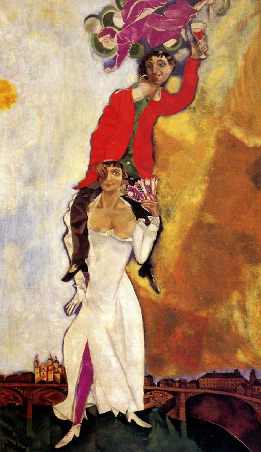
８私はビジネスに徹しただけ
（ヴァランティーナの言葉２）
どんな理由があったにせよ、要するにあなたは大画家の妻の役割が重荷だっただけなのではありませんか。
マルク・シャガールはすでにあちこちの国際舞台に招かれるまでの存在になっていた。
しかし、あなたは面倒な交渉事はすべてマルクの娘イダに任せ、自分自身の世界に逃げ回っていたのよ。
ここで本当のことを言うと、あなたにユダヤ教への改宗を求めたのは私生児扱いのダヴィッドを何とかして籍に入れたかったからなの。
しかし、宗教を理由にあなたは断った。
だから、マルクは別な田舎に転居した。
実はあなたとの関係を隠すための転居だった。
....................................
ところで、芸術家という人間はエゴイストであるべきと私は思うわ。
ベラもイダもマルクが何の不自由もなく制作できるように、絶えず事務的なことを確実に処理した。
そして私もベラもイダも展覧会を企画し、編集者やジャーナリストや美術批評家たちとの交渉に自分の時間のすべてを割いた。
私たちは、マルクが一切の面倒な俗事にかかわることなく、全神経を芸術の制作に打ち込めるようにしたのよ。
だからこそ、無防備なままのナイーヴな彼を守ることが出来た。
菜食主義で痩せっぽちのあなたにはそんな体力も気力もなかったでしょうけれど...。
.................................
ところで、これは自画自賛になって申し訳ないけれど、結局、そんな裏方の役割では私が一番の適任者だったようね。
マルクは私のそんな能力を絶対的なまでに信頼した。
だからこそ、最終的にはイダにもこの業務から退いてもらって、彼女には三人の子育てに打ち込んでもらったの。
あなたはマルクが私と一緒になってから、彼はビジネスマンに成り下がったと言っているけれど、それも独りよがりとしか聞こえないわね。
これははっきりと言っとくわ。
私からすると、芸術もビジネスなのよ。
私はビジネスに徹したわ。
そして彼を精神的な安定で包み、９８歳という天寿を授け、二十世紀を代表する大芸術家まで押し上げたの。
これも私がビジネスに徹したからこそ出来たことなのよ。
皮肉っぽいあなただったら、その安定こそが晩年のマルクを堕落させたとでも言うでしょうが...ね。
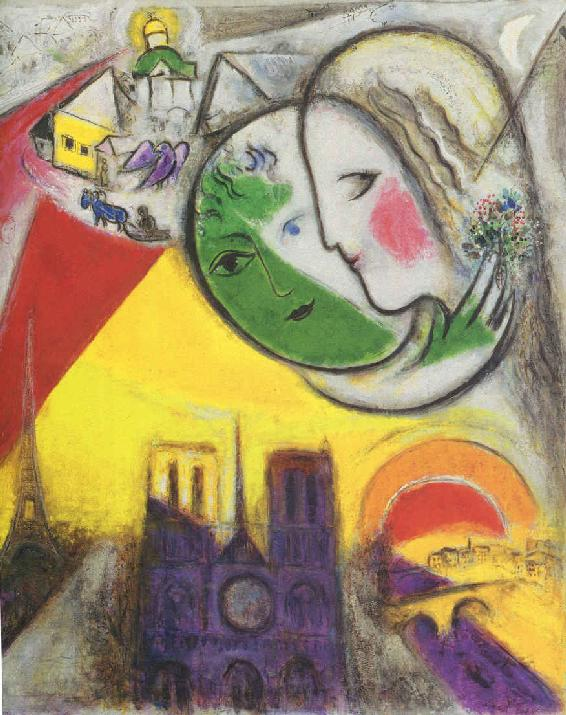
９私が彼を大アーティストにしたのよ
（ヴァランティーナの言葉３）
しかし、あなたが言っている事とは反対に、マルクは私と結婚してから逆に創作の自由を取り戻し、のびのびと制作できるようになったわ。
温暖の地、南フランスのヴァンスやサン・ポール＝ド＝ヴァンスで心満ち足りた生活を送ったせいもあるかしら...彼の感覚も感情も豊かになったのよ。
オートマティスム手法を取り入れて、線は伸びやかになり形態も柔らかく流れるようになった。
そして、色彩は薄い透明色を何度も塗り重ねることで、マルク自身の体内にある色彩が深い輝きを放つようになったわね。
だけど女性依存のマルクにはやはり、私というミューズが必要だった。
彼は私に守られながら「生きる悦び」の中で思う存分仕事をしたわ。
確かに私たちは大変裕福な生活にはなったけれど、マルクはそんな事に拘泥せず、日々、常に新たな芸術の挑戦に向かっていったのよ。
そしてこれまでの油彩画中心から新しい表現方法を模索した。
「どんな手段であれ、向こうが喜んでくれる仕事なら、ぼくはどんな仕事でも引き受けるのだ」
彼はこうして版画、彫刻、陶器、ステンドグラス、モザイク、タペストリーとあらゆる領域に自分の創作の幅を広げていく事になった。
マルクは何と７０歳で果敢に挑戦して、複雑で高度のステンドグラス技法を習得したのだわ。
そしてメッス大聖堂の窓のステンドグラスが完成した。
ステンドグラス制作に取り組んだことによって、彼は従来の色彩表現から新しく光による表現を開花させることになったわね。
やがてマルクのステンドグラスはヨーロッパ、アメリカ、イスラエルの建物や教会の窓を彩っていった。
さらにステンドグラスの仕事をしてからのマルクはどんどん大作に取り組み挑戦するようになったわ。
１９６３年にはド・ゴール将軍、アンドレ・マルロー文化相からの依頼で、パリオペラ座の巨大な円形天井画を制作したし、それからニューヨーク、メトロポリタン・オペラ劇場でのモーツアルト「魔笛」の舞台装置や衣装デザインも手がけた。
続いて、同劇場のロビー大壁画も引き受けて描いた。
実を言うと、こうした大作をどんどんこなす事が出来たのは、私の昼夜分かたぬバックアップがあってこそ可能だったのよ。
私は最初の交渉事から、制作の準備、用具機材の調達、日程の管理など、すべてを完璧にやりこなした。
そして、私による徹底したマルクの健康管理のおかげで、彼は８０歳になっても衰えを知らなかった。
１９６９年にはパリ・グランパレでの大回顧展が実現し、１９７３年にはニースの町を見下ろす丘に「国立マルク・シャガール＜聖書の言葉＞美術館」が建てられた。
９０歳になってもマルクは、ルーブル美術館で再び大個展を行ったわ。
何と、８０歳代に制作した６２枚もの油絵を一気に展示したというのだからね。
..............................
それから、あなたが全面的に否定したユダヤ教のことだけれど...
マルクはユダヤの苦難の歴史に思いを馳せて、旧約聖書の世界にこだわり続けた。
そして、旧約に登場するイスラエル１２部族の連作を完成させた。
要するに、大昔の神話のカタチを借りて、人間の感動的な物語を描いたのね。
さらにイスラエル国会議事堂のための大型タピストリーでは、「出エジプト」「エルサレム入城」「イザヤの預言」のモチーフで、モーセ、ダビデ、イザヤを描いた。
..............................
ところで、１９７３年になってマルクの生まれ故郷ロシアへの帰還がようやく実現出来た事を忘れていたわ。
それまで拒み続けたソ連政府が折れ、文化相からの公式招待を受けて、モスクワの美術館でマルクの初期の作品展を開催する事になった。
私たちはモスクワとペテルブルクを訪問し、５０年ぶりに見るロシアにさすがのマルクも涙が流れて堪らなかった。
しかし、彼は生まれ故郷のヴィテブスクには行く事を断った。
戦争であまりに無残に破壊し尽くされ、ユダヤ人が全くいなくなってしまった街ヴィテブスク。
あまりにも色々な感慨の詰まった思い出の地を訪問して幻滅するのが怖かったからなのよ。
ヴィテブスクはもうマルクの思い出の中にしか存在しないのよ。
空を舞う恋人たち、空飛ぶ牛や馬、教会、郷愁の街並み、屋根の上のバイオリン弾き、花束...どれもすでにマルクの思い出の中にしかなかったのね。
マルクは同じモチーフばかり繰り返して、金もうけ主義の亡者になったとあなたは言うけれど、このように私と一緒になってからのマルクはいつも挑戦し続けて、世界中が称賛する大画家になった。
あなたは馬鹿にするかもしれないけれど、９０歳の誕生日にフランス最高の栄誉、レジオン・ドヌ―ル最高勲章まで受章出来たのよ。
それから最後に...、
マルクはね、あんなに憎んだあなただったけれど、あなたの息子さんのダヴィッドには経済的な援助を惜しまなかったこと...。
これだけは言わせてもらうわ。
そして...
最終的にあなたの息子ダヴイッドをマルク・シャガールの遺産相続人に加えたのはこの私なのよ。
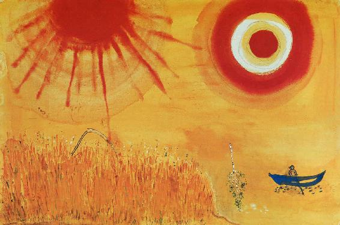
これはフィクションです。
（参考文献）
シャガール（天使とぼくのあしあと） ダヴィッド・マクニール 西村書店 2009
シャガールとの日々―語られなかった七年間 ヴァージニア・ハガード 西村書店 1997
マルク・シャガール シドニー・アレグザンダー 共立出版 1993
シャガールとの出会い（空飛ぶベラ） ベラ・シャガール 柏書房 1994
シャガールわが回想 マルク・シャガール 朝日新聞社 1985
シャガールぼくの大好きなロシアの町 J・ルメイ V・ホワリィ 岩崎書店 1993
マルク・シャガール ハワード・グリンフェルド 同朋舎出版 1992
もっと知りたいシャガール 木島俊介 東京美術 2012
シャガール愛と追放 ジャッキー・ヴォルシュレガー 白水社 2013
私のアニメーションをご覧下さい
「愛の空中時計」を下記のVIMEOかYouTubeでご覧ください
なお、VIMEOもYouTubeもダウンロードされてない場合はダウンロードされてからご覧ください。
もちろんダウンロードも動画をご覧になるのも無料です。
あなた自身のぬり絵を作って下さい。
この線絵を下図に用いて、あなた自身の自由な塗り絵を作ってください。
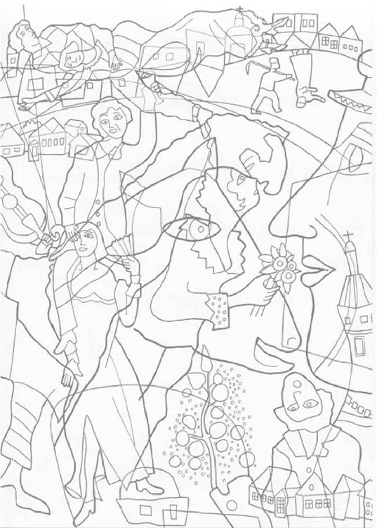
これがぬり絵見本の一例です。
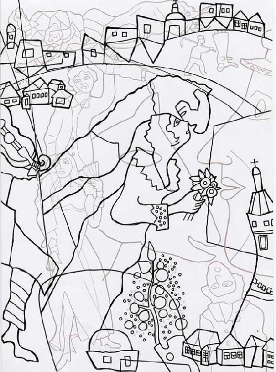
後付
消去されたシャガールの妻（動画付き）
（アーティストラブ４）
発行 2018年9月22日 初版発行
著者 角間貴生（かくまたかお）
Copyright Takao Kakuma
発行所 出版工房ゆめらいふ
〒811-1346 福岡県福岡市南区老司5－5－20
Eメール
アートアニメ絵本館